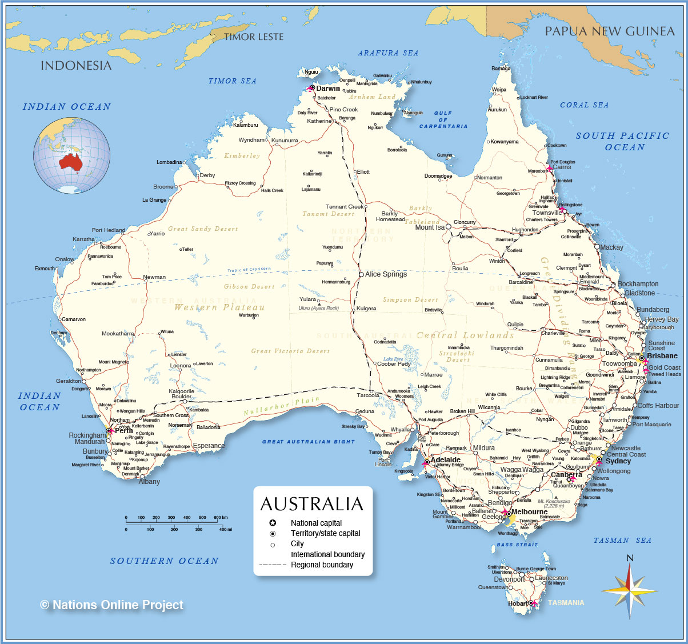
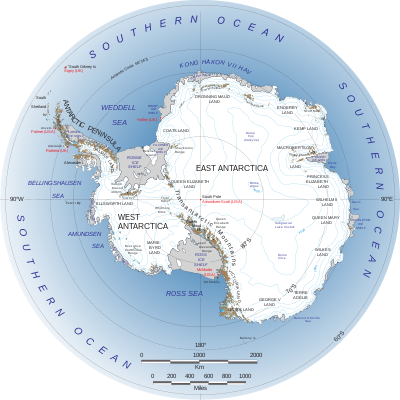

THE WORLD MAP

The map above is a political map of the world centered on Europe and Africa. It shows the location of most of the world's countries and includes their names where space allows. Representing a round earth on a flat map requires some distortion of the geographic features no matter how the map is done. We have used a Mercator projection for this map because it is the projection most commonly used in schools. On this map, geographic boundaries that trend north-south appear as vertical lines, geographic boundaries that trend east-west appear as horizontal lines. This type of projection causes a minimum of country-shape distortion near the equator, a small amount of distortion at mid-latitudes, but extreme distortion near the poles. For that reason, the map does not extend to the north and south poles.
THE SEVEN CONTINENTS OF THE WORLD
- AUSTRALIAN CONTINENT 
- Australia (Oceania) is the smallest continent on Earth and is home to only .3% of the population of the Earth. It is also called Oceania to differentiate between the country Australia and the continent named Australia. The largest city in Oceania is Sydney, Australia with a population of 4.9 million people.
- A lot of the country Australia is uninhabited by humans, but it does have a massive amount of unique plants and animals. Living in Australia is not for the faint of heart with its large desert and scary insects.
- Living in Australia is not for the faint of heart with its large desert and scary insects.
- ANTARTICA CONTINENT 
- Antarctica is our southernmost continent and usually has a population of 1,000 to 5,000 when researchers and scientists are visiting to conduct tests and experiments.
- It is extremely cold, with the temperature ranging between -110 degrees Fahrenheit to 50 degrees Fahrenheit (at the northernmost coast during the summer).
- It has very little precipitation and is actually one of the driest continents on Earth. Antarctica is home to many different animals, such as penguins, orcas, whales, seals, and even some species of squid.
- AFRICA CONTINENT
- Africa is the second-largest continent in the world and houses at least 16% of the Worlds population at 1 billion people.
- Eastern Africa is believed to be the “birthplace” of humanity based on fossil records that researchers have found in Ethiopia that date back to 200,000 years ago.
- The climate of Africa ranges from sub-arctic in the southernmost part to tropical at the northernmost part of the continent. Africa is home to a huge amount of diverse wildlife such as cheetahs, lions, elephants, camels, snakes, a massive amount of sea life, and many species of primates.

- ASIA CONTINENT
- Asia is the largest continent in the world and is also the most populous continent, housing 4.5 billion people.
- It has a size of 17 million miles and the climate ranges from subarctic at the northernmost part to tropical in the southernmost part of the continent.
- Asia is also home to the Himalaya mountains, which is the highest point on Earth. Asia is also home to the Gobi desert which spreads across most of the Middle East.

- Europe continent
- Europe is home to 11% of the Worlds population with 740 million people and takes up about 7% of the Earths landmass
- Europes climate is actually very temperate and is greatly affected by trade winds and the Gulf stream. The northernmost part of Europe’s climate is in the tundra range, whereas the southernmost part of Europe is pretty dry.
- Animals are really heavily influenced by humans since most of Europe is inhabited by humans. “I met a lot of people in Europe. I even encountered myself.” — James Baldwin

- North America continent
- Animals who call North America home include bears, turkeys, wolves, and bison. The United States of America was rated as the richest country in the world in 2016.
- North America’s population is 560 million, holding 7% of the World’s population. The climate ranges from arctic in its northernmost portions to subtropical in its southernmost regions.
- North America takes up about 17% of the World’s landmass, coming in with 9.5 million square miles of land, making it the 3rd largest continent.

“One of the characteristics of North American culture is that you can always start again. You can always move forward, cross a border of a state or a county, and move west — most of the time, west. You leave behind guilt, past traditions, memories.” — Isabel Allende
- South America continent
- The final continent is South America, which takes up about 6.9 million square miles, and is home to about 420 million people.
- South America is home to the largest river in the world, the Amazon River. South America is home to hundreds of different animals, with many animals that have yet to be discovered yet.
- The climate in South America is very similar to Africa in that the southernmost portions of the continent are subarctic, and the northernmost parts are tropical. The Amazon river valley is very tropical and is massive, taking up most of Brazil.